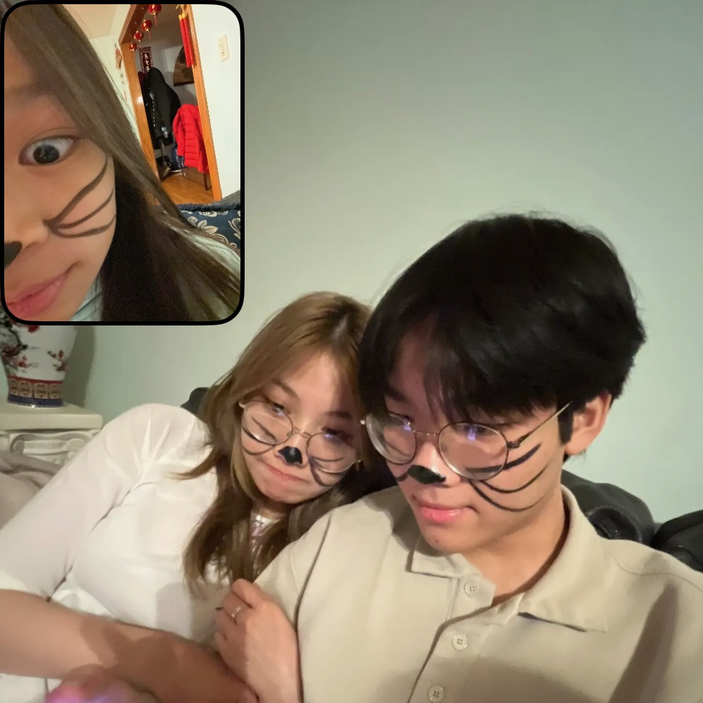

how are you doing today? i hope you're doing well, and i hope you have a safe flight to california.
i wish i could be there with you, but i guess i'll have to be patient for now.
hopefully we'll have a lot of free time in the future, so we can travel the world and experience all sorts of new things together!
make sure to send me lots of pictures of anything cool that you see and all the yummy food while you're there. and most importantly, make sure to send me pictures of you as well!
anyway, can you believe it? it's already been a year since we've started dating!
time sure does fly when you're spending it with someone you love huh.
throughout this year we've done so much together, and i'm glad i was able to make many memories with you.
i'll always cherish those memories because they hold a deep meaning in my heart.
i don't think anyone else matches me the way you do. i guess that's because we're both pretty weird, but you're one of the only people besides my family that make me feel comfortable enough to be myself.
you make me feel like i can open up to you about anything, which can be hard for me to do sometimes.
so, i just want to say thank you for everything you've done for me. i appreciate even the littlest things because they're not little to me.
i should also say thank you to etana as well because she was my wingman during the thanksgiving party.
speaking of the thanksgiving party, isn't that when you first started liking me? at the time, i had already liked you like crazy for a while!
although, before that party because, i almost gave up my feelings for you because i didn't think that you would ever like me back and i didn't want to ruin what we already had between us.
but after i saw you that day, i knew that it was impossible for me to stop liking you.
you made my heart race so fast that i thought i was going to have a heart attack. lucikly, jason would've been there to save me if i did have one.
after that, everyone in my family knew that i liked you because it was so obvious that i couldn't hide it even if i wanted to.
they were also telling me that you liked me, but i didn't believe it. i remember joyce, abby, brittany, and even my aunt bich were convinced that you liked me.
i think you also tried to drop me hints, but i was too oblvious to notice them.
i should've realized when you held my hand in the car that one time, but i didn't. i think i was so convinced that you didn't like me that i played it off as something friends do.
boy am i dumb.
on that same day, brandon and vincent told me that you liked me back, so i went to your house to confess my feelings for you and to ask if i could be your boyfriend.
kind of crazy how you told brandon you liked me twice, and he ended up telling me both times.
but everything worked out in the end, so i guess you can't really blame him.
then, you went to california for winter break and i couldn't see you for 2 weeks until you got back. that was the most excruciating wait of my entire life.
remember when i told you that i loved you after we had only been dating for a week?
it's funny looking back at it now, but at the time it was very embarrassing for me because i said it so fast.
i really did feel that way about you, but maybe i should've waited a little longer to say it.
oh, and during that time we were both applying to colleges and hoping to go to the same one.
that's also when i wrote my college essay about you, and it was pretty much a love letter. i'm still very proud of that essay to this day, but i did get made fun of because of it.
after what felt like an eternity, you finally came back from vacation, and we went on our first date!
i remember being very worried because you were coming to my house when no one was home at the time. i had to call brandon and vincent to make a u-turn when they were on their way to the gym so that you wouldn't be waiting alone
then, we went to the mall and walked around for a while before we went to eat at seoul korean restuarant. honestly the food was mid, but i had a great time because i was there with you.
that reminds me of when i would throw up every time we went out to eat before we started dating because i was so nervous around you.
anyway, we both ended up having our first kisses that night. i think it was quite an unforgettable first kiss hehehaha.
after that, we made a lot of fun memories together.
like when you came over to my house for the lunar new year party and we both wore ao dai.
or when we went to the vietnamese community lunar new year party together and got our faces painted like cats.
and all those times we would bake desserts together. i miss doing that, we should try to bake again some time. i think the matcha tiramisu that we made is still my favorite.
then as time passed, and we spent more time together, you also got to meet more of my family and get to know them better. now they always ask where you are whenever you're not with me at a party.
i'm glad you're able to get along with my family so well, and i hope i can do the same with yours. i think i've been doing okay considering i had a rocky start at the beginning of our relationship, but i hope i can become better and prove to your family that i can take good care of you in the future.
oh look! there's your birthday! may the fourth be with you! har har har, i'm so funny.
we also got to go to lake george together after we had mei ask your dad if you could come. i'm pretty sure he saw right through that plan though.
after that, we went to prom together, which is something that i never thought i would do.
i always thought that i would never get to experience prom because i didn't feel like going, and i had no one to go with.
but, since you let me be your boyfriend, it only made sense that we would go to prom together.
it definetely wasn't the craziest night of my life, but i still had a lot of fun with you, and it was a cool experience with everyone else.
ever since you've come into my life, you've shown me things that i never thought i would experience.
you make me happy, and you make me want to become a better person so that i can make other people around me happy.
i genueinly don't know what my life would be like without you. in fact, i don't even want to think about that because i already know it would be a sad life.
we've had highs, and we've also had lows, but i'm glad that i'm having my first and hopefully last relationship with you because we can learn and grow together.
i know you have your worries sometimes, but i can assure you that you don't have to worry because we're both figuring life out together.
i hope that one day we'll be able to grow old together and watch the sunrise in the morning and the sunset in the evening.
and hopefully our kids will look cute and chubby so that I can pinch their cheeks. i keep seeing babies with chubby cheeks on my instagram page and they look so funny.
but for now, i'll just have to stick with pinching your cheeks. i'll be sad because i won't be able to pinch your cheeks until you come back from your trip though.
speaking of which, i don't know what i'll be doing since you'll be gone. i think i might just hibernate for the winter.
just kidding, i want to try to be at least a little productive so that i can develop my coding skills more and work towards getting an internship.
then, when i graduate, i'll hopefully be able to find a good paying job so that i can finally afford to buy you all the clothes and makeup that you want.
your closet won't be empty, but my bank account might be...
hey, would you look at that! look at those beautiful artworks in that display!
and who's that masterpiece on the side there? no way, is that the linh le herself?
you know, i hope you'll always remember how amazing of an artist you are. you should be very proud of yourself because i sure am.
i'm also proud of us for graduating. with the way senior year was looking for me at least, things weren't looking so good. but hey, we did it!
although, i almost failed calculus and pretty much ruined the family name when me and brandon got caught by the nhs for cheating on an assignment. we don't talk about that though.
i think one of my favorite memories with you was when we went to the blackpink concert over the summer.
that was both of our first conerts and i will stand by the fact that it was a life-chanigng experience. music just didn't hit the same for a few weeks after that concert.
it was a very exciting experience and i want to go to more concerts with you in the future.
and that pretty much wraps up most of what we did together this year.
i hope we can both look back on these memories when we're older and reminisce about all the fun that we had.
we're still very young, and we have a lot of time ahead of us. so, let's keep making more fun memories together in the future! i'll be sure to look forward to them!
anyway, i hope you have a wonderful trip enjoying the nice weather while i'm stuck here in the freezing cold.
but wherever you are whenever we are apart, you should always remember that i love you and i will always continue to love you.
love, anthony


